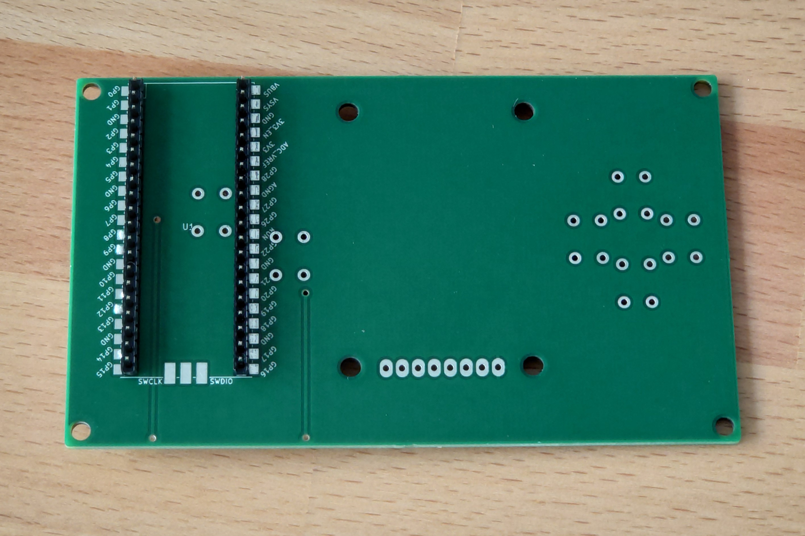
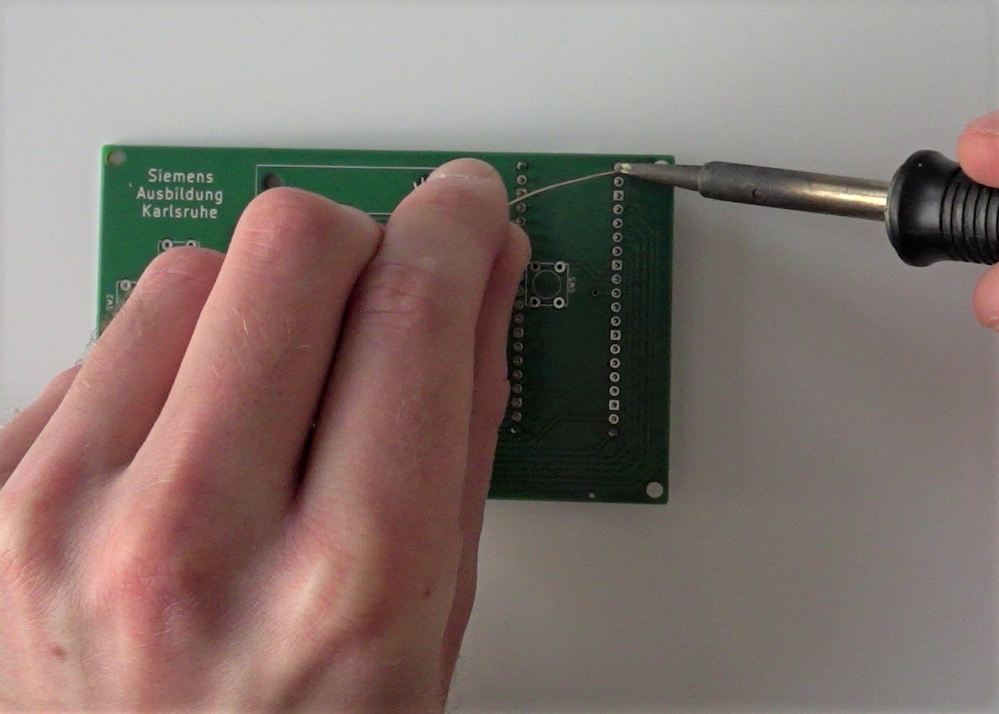
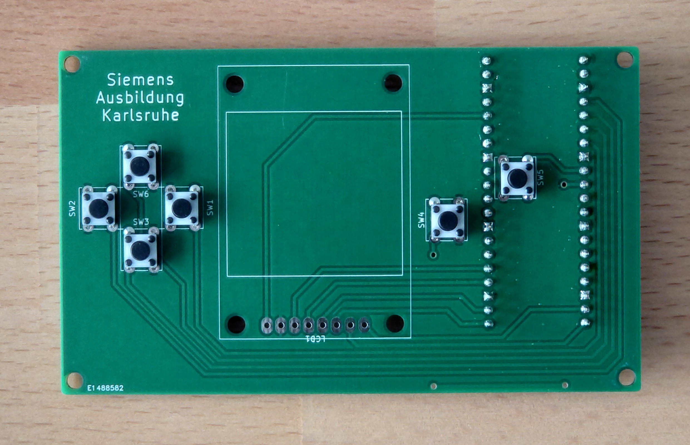
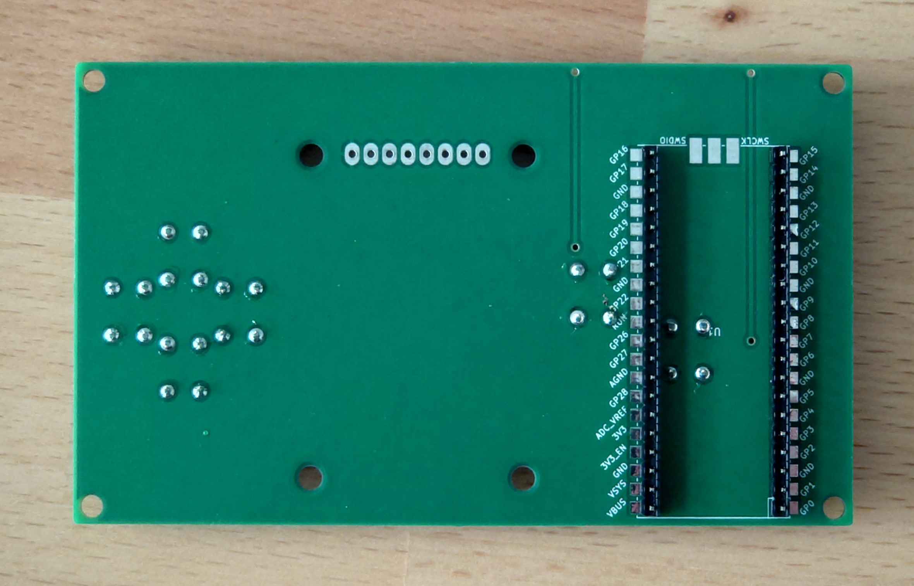
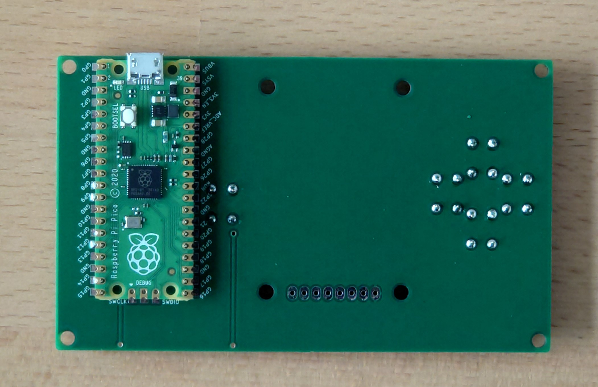
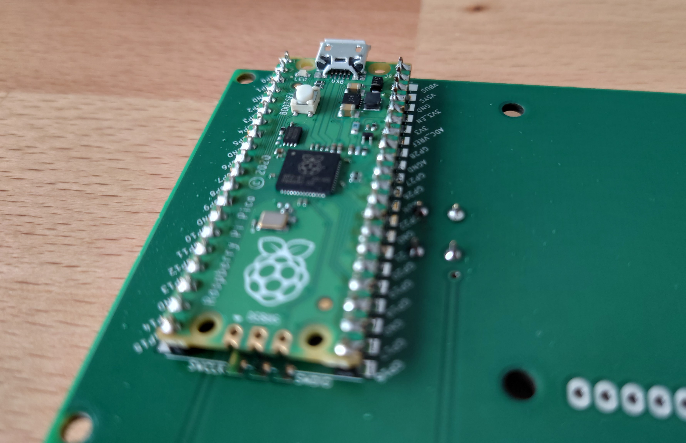
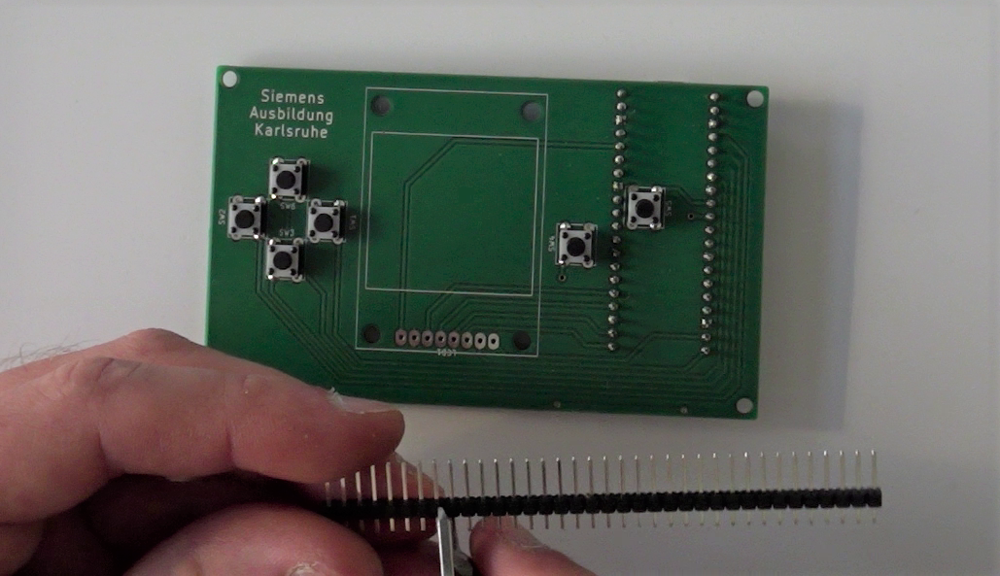
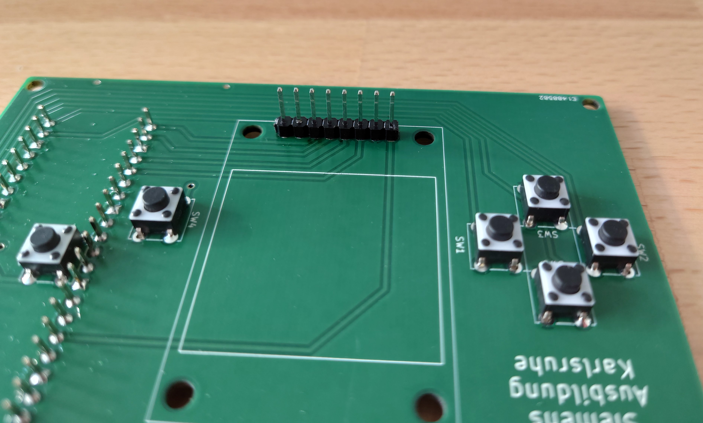
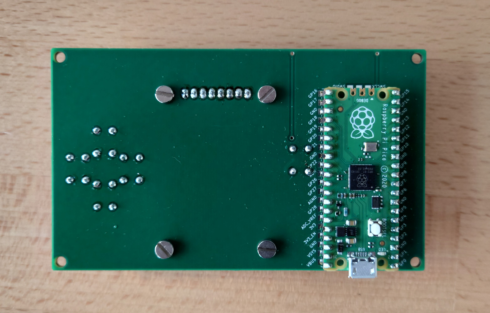
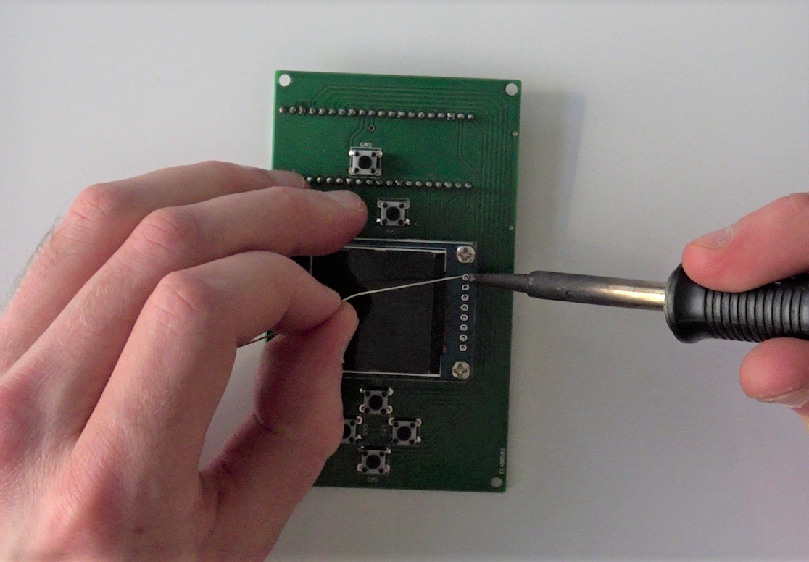

Dieser Teil der Anleitung ist hier auch in Videoform verfügbar
Aufbau
Die Konsole besteht aus den folgenden Bauteilen:
- Platine
- Raspberry Pi Pico
- Taster
- Display
- Gehäuse
Diese Bauteile müssen korrekt verdrahtet bzw. miteinander verbunden werden, damit die entsprechenden Funktionen gegeben sind. Diese Aufgabe übernimmt die Platine für uns. Auf ihr befinden sich Leiterbahnen, die die Verbindungen zwischen den Modulen und dem Mikrocontroller herstellen.
Achtung: Es ist wichtig, dass alle Bauteile auf der richtigen Seite der Platine verlötet werden. Auf der Platine ist jeweils an der entsprechenden Stelle der Umriss des Bauteils aufgedruckt.
Als erstes werden die Stiftleisten für den Mikrocontroller auf die Platine gelötet. Dazu werden diese mit dem langen Ende durch die Platine gesteckt und der Microcontroller zur Stabilisierung aufgesteckt.
Das Ganze wird umgedreht und auf der Rückseite verlötet. Anschließend wird der Microcontroller wieder abgezogen.
Nun werden die sechs Taster durch die Platine gesteckt und auf der Rückseite verlötet.
 Der Microcontroller wird wieder auf die Stiftleisten gesteckt, dabei muss auf die richtige Ausrichtung geachtet werden: Der USB-Anschluss zeigt nach oben und von der Platine weg.
Nun kann der Microcontroller mit den Stiftleisten verlötet werden.
Jetzt fehlt nur noch das Display: Dieses wird ebenfalls über Stiftleisten mit der Platine verbunden, die zunächst mit einem Seitenschneider auf die richtige Länge gekürzt werden müssen.
Diese Stiftleisten werden mit der kurzen Seite durch die Platine gesteckt und auf der Rückseite verlötet.
Das Display wird nun mit vier Schrauben an der Platine fixiert und dann mit der Stiftleisten verlötet.
 Nun kann die Platine in das Gehäuse eingesetzt werden.